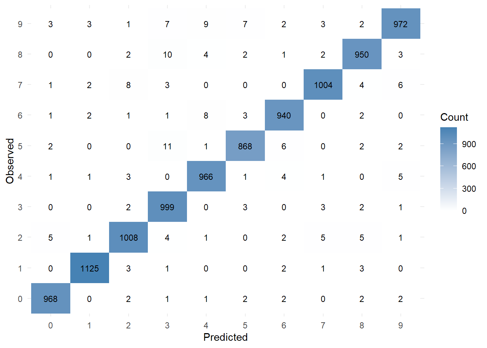

Code
library(tensorflow)
library(keras)
library(ggplot2)
options(width=1000)
options(digits=3)
options(scipen=999)
par(mai=c(.001,.001,.001,.001),mar=c(.001,.001,.001,.001),oma=c(.001,.001,.001,.001))The code below uses the keras library, plus helper functions from rwf for the confusion matrix and scatterplot. Much of the code follows the MNIST example in Chollet and Allaire (2018), Deep Learning with R (see Acknowledgments).
The dataset is obtained from keras::dataset_mnist() function then usually we have to
- Split the dataset in train and test datasets.
- Scale the dataset (values in dataset should be -1 to 1 or 0 to 1).
- Scaling on the test dataset should be done using the mean and sd of the training dataset.
In this case the train/test split is already done: dataset_mnist() returns separate train and test sets, each with inputs (x) and labels (y); scaling is done further below. What is done below is simply to rename some variables to make our life a bit easier. The dataset consists of 60000 representations of train images and 10000 representations of test images and their corresponding labels.
Each image is a 28*28 pixel grayscale of handwritten numbers, and their respective number values are stored in the labels datasets. Let’s see the first image in the test dataset:
[,1] [,2] [,3] [,4] [,5] [,6] [,7] [,8] [,9] [,10] [,11] [,12] [,13] [,14] [,15] [,16] [,17] [,18] [,19] [,20] [,21] [,22] [,23] [,24] [,25] [,26] [,27] [,28]
[1,] 0 0 0 0 0 0 0 0 0 0 0 0 0 0 0 0 0 0 0 0 0 0 0 0 0 0 0 0
[2,] 0 0 0 0 0 0 0 0 0 0 0 0 0 0 0 0 0 0 0 0 0 0 0 0 0 0 0 0
[3,] 0 0 0 0 0 0 0 0 0 0 0 0 0 0 0 0 0 0 0 0 0 0 0 0 0 0 0 0
[4,] 0 0 0 0 0 0 0 0 0 0 0 0 0 0 0 0 0 0 0 0 0 0 0 0 0 0 0 0
[5,] 0 0 0 0 0 0 0 0 0 0 0 0 0 0 0 0 0 0 0 0 0 0 0 0 0 0 0 0
[6,] 0 0 0 0 0 0 0 0 0 0 0 0 0 0 0 0 0 0 0 0 0 0 0 0 0 0 0 0
[7,] 0 0 0 0 0 0 0 0 0 0 0 0 0 0 0 0 0 0 0 0 0 0 0 0 0 0 0 0
[8,] 0 0 0 0 0 0 84 185 159 151 60 36 0 0 0 0 0 0 0 0 0 0 0 0 0 0 0 0
[9,] 0 0 0 0 0 0 222 254 254 254 254 241 198 198 198 198 198 198 198 198 170 52 0 0 0 0 0 0
[10,] 0 0 0 0 0 0 67 114 72 114 163 227 254 225 254 254 254 250 229 254 254 140 0 0 0 0 0 0
[11,] 0 0 0 0 0 0 0 0 0 0 0 17 66 14 67 67 67 59 21 236 254 106 0 0 0 0 0 0
[12,] 0 0 0 0 0 0 0 0 0 0 0 0 0 0 0 0 0 0 83 253 209 18 0 0 0 0 0 0
[13,] 0 0 0 0 0 0 0 0 0 0 0 0 0 0 0 0 0 22 233 255 83 0 0 0 0 0 0 0
[14,] 0 0 0 0 0 0 0 0 0 0 0 0 0 0 0 0 0 129 254 238 44 0 0 0 0 0 0 0
[15,] 0 0 0 0 0 0 0 0 0 0 0 0 0 0 0 0 59 249 254 62 0 0 0 0 0 0 0 0
[16,] 0 0 0 0 0 0 0 0 0 0 0 0 0 0 0 0 133 254 187 5 0 0 0 0 0 0 0 0
[17,] 0 0 0 0 0 0 0 0 0 0 0 0 0 0 0 9 205 248 58 0 0 0 0 0 0 0 0 0
[18,] 0 0 0 0 0 0 0 0 0 0 0 0 0 0 0 126 254 182 0 0 0 0 0 0 0 0 0 0
[19,] 0 0 0 0 0 0 0 0 0 0 0 0 0 0 75 251 240 57 0 0 0 0 0 0 0 0 0 0
[20,] 0 0 0 0 0 0 0 0 0 0 0 0 0 19 221 254 166 0 0 0 0 0 0 0 0 0 0 0
[21,] 0 0 0 0 0 0 0 0 0 0 0 0 3 203 254 219 35 0 0 0 0 0 0 0 0 0 0 0
[22,] 0 0 0 0 0 0 0 0 0 0 0 0 38 254 254 77 0 0 0 0 0 0 0 0 0 0 0 0
[23,] 0 0 0 0 0 0 0 0 0 0 0 31 224 254 115 1 0 0 0 0 0 0 0 0 0 0 0 0
[24,] 0 0 0 0 0 0 0 0 0 0 0 133 254 254 52 0 0 0 0 0 0 0 0 0 0 0 0 0
[25,] 0 0 0 0 0 0 0 0 0 0 61 242 254 254 52 0 0 0 0 0 0 0 0 0 0 0 0 0
[26,] 0 0 0 0 0 0 0 0 0 0 121 254 254 219 40 0 0 0 0 0 0 0 0 0 0 0 0 0
[27,] 0 0 0 0 0 0 0 0 0 0 121 254 207 18 0 0 0 0 0 0 0 0 0 0 0 0 0 0
[28,] 0 0 0 0 0 0 0 0 0 0 0 0 0 0 0 0 0 0 0 0 0 0 0 0 0 0 0 0[1] 7Each image is a 28 by 28 matrix with values ranging from 0 to 255, thus the input of the network has to be 28*28=784 units. Inputs should be reshaped in a format acceptable by the network input layer. Input data should also be scaled by dividing by 255. This scaling results in a 0 - 1 range.
The specified network for our task is a simple sequential network that takes 784 inputs, passes them through three fully connected hidden layers (100, 1000 and 1000 units, ReLU activation), and ends in an output layer of 10 units with softmax activation. Each unit in each layer connects with all units in the neighboring layers. Each of the 10 output units represents one digit, in the order 0, 1, 2, …, 9. The network is trained by minimising categorical cross-entropy (the loss) and is evaluated with accuracy, the proportion of images whose highest-scoring output unit matches the true digit. The choice of these measures partly depends on the nature of the output. In our case the labels are one-hot encoded (a 1 for the true digit, 0 elsewhere), and the softmax output layer returns 10 probabilities that sum to 1; the predicted digit is the unit with the highest probability.
network<-keras_model_sequential() %>%
layer_dense(units=100,activation="relu",input_shape=c(28*28)) %>%
layer_dense(units=1000,activation="relu") %>%
layer_dense(units=1000,activation="relu") %>%
layer_dense(units=10,activation="softmax")
network %>% compile(optimizer="rmsprop",
loss="categorical_crossentropy",
metrics=c("accuracy"))Epoch 1/30
77/77 - 1s - loss: 0.5981 - accuracy: 0.8081 - 1s/epoch - 16ms/step
Epoch 2/30
77/77 - 1s - loss: 0.2200 - accuracy: 0.9317 - 947ms/epoch - 12ms/step
Epoch 3/30
77/77 - 1s - loss: 0.1477 - accuracy: 0.9539 - 941ms/epoch - 12ms/step
Epoch 4/30
77/77 - 1s - loss: 0.1095 - accuracy: 0.9659 - 913ms/epoch - 12ms/step
Epoch 5/30
77/77 - 1s - loss: 0.0885 - accuracy: 0.9728 - 953ms/epoch - 12ms/step
Epoch 6/30
77/77 - 1s - loss: 0.0733 - accuracy: 0.9770 - 944ms/epoch - 12ms/step
Epoch 7/30
77/77 - 1s - loss: 0.0600 - accuracy: 0.9815 - 968ms/epoch - 13ms/step
Epoch 8/30
77/77 - 1s - loss: 0.0510 - accuracy: 0.9839 - 952ms/epoch - 12ms/step
Epoch 9/30
77/77 - 1s - loss: 0.0415 - accuracy: 0.9873 - 961ms/epoch - 12ms/step
Epoch 10/30
77/77 - 1s - loss: 0.0348 - accuracy: 0.9892 - 948ms/epoch - 12ms/step
Epoch 11/30
77/77 - 1s - loss: 0.0301 - accuracy: 0.9909 - 938ms/epoch - 12ms/step
Epoch 12/30
77/77 - 1s - loss: 0.0252 - accuracy: 0.9923 - 961ms/epoch - 12ms/step
Epoch 13/30
77/77 - 1s - loss: 0.0232 - accuracy: 0.9925 - 916ms/epoch - 12ms/step
Epoch 14/30
77/77 - 1s - loss: 0.0236 - accuracy: 0.9929 - 943ms/epoch - 12ms/step
Epoch 15/30
77/77 - 1s - loss: 0.0160 - accuracy: 0.9950 - 921ms/epoch - 12ms/step
Epoch 16/30
77/77 - 1s - loss: 0.0127 - accuracy: 0.9960 - 955ms/epoch - 12ms/step
Epoch 17/30
77/77 - 1s - loss: 0.0146 - accuracy: 0.9963 - 944ms/epoch - 12ms/step
Epoch 18/30
77/77 - 1s - loss: 0.0116 - accuracy: 0.9966 - 924ms/epoch - 12ms/step
Epoch 19/30
77/77 - 1s - loss: 0.0086 - accuracy: 0.9977 - 922ms/epoch - 12ms/step
Epoch 20/30
77/77 - 1s - loss: 0.0129 - accuracy: 0.9964 - 929ms/epoch - 12ms/step
Epoch 21/30
77/77 - 1s - loss: 0.0064 - accuracy: 0.9985 - 972ms/epoch - 13ms/step
Epoch 22/30
77/77 - 1s - loss: 0.0063 - accuracy: 0.9985 - 978ms/epoch - 13ms/step
Epoch 23/30
77/77 - 1s - loss: 0.0059 - accuracy: 0.9982 - 927ms/epoch - 12ms/step
Epoch 24/30
77/77 - 1s - loss: 0.0068 - accuracy: 0.9983 - 1s/epoch - 13ms/step
Epoch 25/30
77/77 - 1s - loss: 0.0070 - accuracy: 0.9978 - 968ms/epoch - 13ms/step
Epoch 26/30
77/77 - 1s - loss: 0.0028 - accuracy: 0.9994 - 959ms/epoch - 12ms/step
Epoch 27/30
77/77 - 1s - loss: 0.0045 - accuracy: 0.9987 - 934ms/epoch - 12ms/step
Epoch 28/30
77/77 - 1s - loss: 0.0035 - accuracy: 0.9990 - 964ms/epoch - 13ms/step
Epoch 29/30
77/77 - 1s - loss: 0.0031 - accuracy: 0.9990 - 954ms/epoch - 12ms/step
Epoch 30/30
77/77 - 1s - loss: 0.0031 - accuracy: 0.9992 - 947ms/epoch - 12ms/step313/313 - 1s - loss: 0.1083 - accuracy: 0.9802 - 527ms/epoch - 2ms/step loss accuracy
0.108 0.980 In order to see how well the network performs, we use the test dataset. The test labels are stored in one-hot form as a 10000 x 10 matrix (one row per image, one column per digit). However, after a short transformation it is possible to obtain a vector of integers from 0 to 9.
Min. 1st Qu. Median Mean 3rd Qu. Max.
0.00 2.00 4.00 4.44 7.00 9.00 An ideal model should produce a confusion matrix where every predicted digit matches the observed digit. This is represented by having all high frequencies in the diagonal whilst all off diagonal values should ideally be 0. In the table below, rows are predicted digits and columns are observed digits; the “p” column gives the precision for each predicted digit, the “p” row the recall for each observed digit, and the bottom-right cell the overall accuracy. In the heatmap, observed digits are on the vertical axis and predicted digits on the horizontal axis. The confusion matrix indicates around 98% prediction accuracy from 10000 images.
313/313 - 0s - 460ms/epoch - 1ms/step 0 1 2 3 4 5 6 7 8 9 sum p
0 972.00 0.00 5.00 0.00 0.00 2.00 2.00 2.00 2.00 1.00 986.00 0.99
1 0.00 1127.00 3.00 0.00 1.00 0.00 2.00 2.00 0.00 3.00 1138.00 0.99
2 1.00 1.00 1000.00 4.00 5.00 0.00 0.00 8.00 3.00 0.00 1022.00 0.98
3 0.00 1.00 6.00 987.00 0.00 6.00 1.00 2.00 4.00 4.00 1011.00 0.98
4 1.00 0.00 3.00 0.00 963.00 0.00 4.00 2.00 2.00 7.00 982.00 0.98
5 1.00 1.00 1.00 7.00 1.00 875.00 3.00 1.00 3.00 4.00 897.00 0.98
6 3.00 2.00 2.00 0.00 2.00 2.00 943.00 0.00 1.00 1.00 956.00 0.99
7 0.00 1.00 3.00 5.00 2.00 1.00 0.00 1002.00 5.00 7.00 1026.00 0.98
8 1.00 2.00 9.00 4.00 0.00 5.00 3.00 2.00 952.00 1.00 979.00 0.97
9 1.00 0.00 0.00 3.00 8.00 1.00 0.00 7.00 2.00 981.00 1003.00 0.98
sum 980.00 1135.00 1032.00 1010.00 982.00 892.00 958.00 1028.00 974.00 1009.00 10000.00 1.00
p 0.99 0.99 0.97 0.98 0.98 0.98 0.98 0.97 0.98 0.97 1.00 0.98cm <- as.data.frame(table(observe=observed, predict=predicted))
library(ggplot2)
ggplot(cm, aes(x=predict, y=observe, fill=Freq)) +
geom_tile() +
geom_text(aes(label=Freq), size=3) +
scale_fill_gradient(low="white", high="steelblue") +
labs(x="Predicted", y="Observed", fill="Count") +
theme_minimal()
Another descriptive view is a scatterplot of observed against predicted digits. If every prediction were correct, all points would lie on the diagonal (observed = predicted); the small off-diagonal points are the misclassified images. Because digits are categories, the fitted line and correlation are only a rough summary.
From the 10000 image test dataset, the network was unable to classify correctly 198 images. It may be interesting to visualize these misclassified images. Each image is labelled predicted/observed.
The data preparation, compile settings and overall workflow follow the MNIST example in section 2.1 (“A first look at a neural network”) of Chollet and Allaire (2018); the network here is larger than the book’s (three hidden layers instead of one 512-unit layer) and is trained for 30 epochs with a batch size of 784. The data come from the MNIST database (LeCun et al., 1998). The model diagram is drawn with deepviz, and the confusion matrix and scatterplot use helper functions from rwf.
---
title: "MNIST in Keras"
author: ""
output:
html_document:
css: styles.css
theme: flatly
highlight: tango
toc: true
toc_float: true
code_folding: show
self_contained: true
vignette: >
%\VignetteIndexEntry{MNIST in Keras}
%\VignetteEngine{knitr::rmarkdown}
%\VignetteEncoding{UTF-8}
---
```{r options,echo=FALSE,warning=FALSE,message=FALSE}
directory <- if (rstudioapi::isAvailable()) paste0(dirname(rstudioapi::getActiveDocumentContext()$path),"/") else ""
source(paste0(directory, "R/code_options.R"))
source(paste0(directory, "R/code_rwf.R"))
```
```{r install_keras_tensorflow,echo=FALSE,warning=FALSE,message=FALSE}
# install.packages("remotes")
# remotes::install_github("rstudio/tensorflow")
# reticulate::install_python()
# library(tensorflow)
# tensorflow::install_tensorflow(envname = "r-tensorflow")
# install.packages("keras")
# library(keras)
# install_keras()
# reticulate::virtualenv_create("r-tensorflow")
reticulate::use_virtualenv("r-tensorflow")
```
# Keras on the MNIST dataset
The code below uses the keras library, plus helper functions from rwf for the confusion matrix and scatterplot. Much of the code follows the MNIST example in Chollet and Allaire (2018), Deep Learning with R (see Acknowledgments).
```{r set-options}
library(tensorflow)
library(keras)
library(ggplot2)
options(width=1000)
options(digits=3)
options(scipen=999)
par(mai=c(.001,.001,.001,.001),mar=c(.001,.001,.001,.001),oma=c(.001,.001,.001,.001))
```
# Obtaining and preparing the data
The dataset is obtained from keras::dataset_mnist() function then usually we have to
- Split the dataset in train and test datasets.
- Scale the dataset (values in dataset should be -1 to 1 or 0 to 1).
- Scaling on the test dataset should be done using the mean and sd of the training dataset.
In this case the train/test split is already done: dataset_mnist() returns separate train and test sets, each with inputs (x) and labels (y); scaling is done further below. What is done below is simply to rename some variables to make our life a bit easier. The dataset consists of 60000 representations of train images and 10000 representations of test images and their corresponding labels.
```{r train_test}
mnist<-dataset_mnist()
train_images<-mnist$train$x
train_labels<-mnist$train$y
test_images<-mnist$test$x
test_labels<-mnist$test$y
```
## How the data look like
Each image is a 28*28 pixel grayscale of handwritten numbers, and their respective number values are stored in the labels datasets. Let's see the first image in the test dataset:
```{r shape,out.width="100%"}
test_images[1,,] # this is how the image looks as a matrix representation
plot(as.raster(test_images[1,,],max=255)) # this is how the image looks like as a raster representation
test_labels[1] # and this is its corresponding value
```
## Data Wrangling
Each image is a 28 by 28 matrix with values ranging from 0 to 255, thus the input of the network has to be 28*28=784 units. Inputs should be reshaped in a format acceptable by the network input layer. Input data should also be scaled by dividing by 255. This scaling results in a 0 - 1 range.
```{r wrangling}
train_images<-array_reshape(train_images,c(60000,28*28))
train_images<-train_images/255
test_images<-array_reshape(test_images,c(10000,28*28))
test_images<-test_images/255
train_labels<-to_categorical(train_labels)
test_labels<-to_categorical(test_labels)
```
# Network specification
The specified network for our task is a simple sequential network that takes 784 inputs, passes them through three fully connected hidden layers (100, 1000 and 1000 units, ReLU activation), and ends in an output layer of 10 units with softmax activation. Each unit in each layer connects with all units in the neighboring layers. Each of the 10 output units represents one digit, in the order 0, 1, 2, ..., 9. The network is trained by minimising categorical cross-entropy (the loss) and is evaluated with accuracy, the proportion of images whose highest-scoring output unit matches the true digit. The choice of these measures partly depends on the nature of the output. In our case the labels are one-hot encoded (a 1 for the true digit, 0 elsewhere), and the softmax output layer returns 10 probabilities that sum to 1; the predicted digit is the unit with the highest probability.
```{r spesification}
network<-keras_model_sequential() %>%
layer_dense(units=100,activation="relu",input_shape=c(28*28)) %>%
layer_dense(units=1000,activation="relu") %>%
layer_dense(units=1000,activation="relu") %>%
layer_dense(units=10,activation="softmax")
network %>% compile(optimizer="rmsprop",
loss="categorical_crossentropy",
metrics=c("accuracy"))
```
# Network training
```{r training}
network %>% fit(train_images,train_labels,epochs=30,batch_size=784)
network %>% evaluate(test_images,test_labels)
```
# Network evaluation
In order to see how well the network performs, we use the test dataset. The test labels are stored in one-hot form as a 10000 x 10 matrix (one row per image, one column per digit). However, after a short transformation it is possible to obtain a vector of integers from 0 to 9.
```{r output_transformation}
rtl<-c()
for(i in 1:nrow(test_labels))
rtl<-c(rtl,which(test_labels[i,]==1)-1)
summary(rtl)
deepviz::plot_model(network)
```
## Confusion matrix
An ideal model should produce a confusion matrix where every predicted digit matches the observed digit. This is represented by having all high frequencies in the diagonal whilst all off diagonal values should ideally be 0. In the table below, rows are predicted digits and columns are observed digits; the "p" column gives the precision for each predicted digit, the "p" row the recall for each observed digit, and the bottom-right cell the overall accuracy. In the heatmap, observed digits are on the vertical axis and predicted digits on the horizontal axis. The confusion matrix indicates around 98% prediction accuracy from 10000 images.
```{r confusion_matrix}
predicted <- as.integer(predict(network, test_images) %>% k_argmax())
observed <- apply(test_labels, 1, which.max) - 1
op <- data.frame(predict=predicted, observe=observed)
confusion_matrix_percent(observed=op$observe,predicted=op$predict)
cm <- as.data.frame(table(observe=observed, predict=predicted))
library(ggplot2)
ggplot(cm, aes(x=predict, y=observe, fill=Freq)) +
geom_tile() +
geom_text(aes(label=Freq), size=3) +
scale_fill_gradient(low="white", high="steelblue") +
labs(x="Predicted", y="Observed", fill="Count") +
theme_minimal()
```
## Scatterplot
Another descriptive view is a scatterplot of observed against predicted digits. If every prediction were correct, all points would lie on the diagonal (observed = predicted); the small off-diagonal points are the misclassified images. Because digits are categories, the fitted line and correlation are only a rough summary.
```{r,out.width="100%",results="hide"}
plot_scatterplot(op)
differences<-setdiff(1:length(op$predict),which(op$predict==op$observe))
```
## Errors
From the 10000 image test dataset, the network was unable to classify correctly `r length(differences)` images. It may be interesting to visualize these misclassified images.
Each image is labelled predicted/observed.
```{r errors,fig.width=10,fig.height=ceiling(length(differences)/20)*0.6,out.width="100%"}
length(differences)
par(mfrow=c(ceiling(length(differences)/20),20),mar=c(0,0,1,0))
for(i in differences) {
plot(as.raster(mnist$test$x[i,,],max=255))
title(paste0(op$predict[i],"/",op$observe[i]),cex.main=0.8,font.main=1)
}
```
# Acknowledgments
The data preparation, compile settings and overall workflow follow the MNIST example in section 2.1 ("A first look at a neural network") of Chollet and Allaire (2018); the network here is larger than the book's (three hidden layers instead of one 512-unit layer) and is trained for 30 epochs with a batch size of 784. The data come from the MNIST database (LeCun et al., 1998). The model diagram is drawn with deepviz, and the confusion matrix and scatterplot use helper functions from rwf.
- Chollet, F., & Allaire, J. J. (2018). *Deep Learning with R*. Manning Publications.
- LeCun, Y., Bottou, L., Bengio, Y., & Haffner, P. (1998). Gradient-based learning applied to document recognition. *Proceedings of the IEEE, 86*(11), 2278–2324.
- LeCun, Y., Cortes, C., & Burges, C. J. C. *The MNIST database of handwritten digits*. <http://yann.lecun.com/exdb/mnist/>
- Allaire, J. J., & Chollet, F. *keras: R Interface to 'Keras'*. R package. <https://CRAN.R-project.org/package=keras>
- Allaire, J. J., & Tang, Y. *tensorflow: R Interface to 'TensorFlow'*. R package. <https://tensorflow.rstudio.com/>
- de Vries, A. (2019). *deepviz: Visualize Neural Network Architectures*. R package. <https://github.com/andrie/deepviz>
- *rwf*: R functions used across these examples. <https://github.com/sedzinfo/rwf>